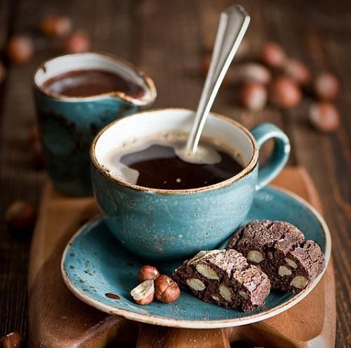

Heartwarming Coffee That Will Lighten Up Your Day
offee lovers rejoice! Far too many people feel a sense of guilt over their coffee habit - and regardless of the health benefits of any particular food or drink, guilt has no place in your diet.
Taking pleasure in food and beverages is one of the best joys in life, so enjoy yourself!
Back to coffee - if you love a good cup of joe, you can take great pleasure in knowing that scientific studies are saying what you may have secretly suspected: It can be really good for you!
In exciting recent research, it has been demonstrated that regular consumption of coffee reduces your risk of both hemorrhagic and ischemic stroke. It was found that drinking 5 or more cups of coffee a day can reduce the risk of death from a stroke by 36 percent!
In a 2002 Dutch study with 17,111 adults, it was demonstrated that those participants drinking at least 7 cups of coffee per day were half as likely to develop type 2 diabetes - and in the world of science, this is considered statistically significant.
Additionally, more than a dozen other studies have replicated and confirmed this finding in differing and varying populations.
Coffee can relieve your migraine, and burn fat.
There have been numerous studies showing that about 16 ounces of brewed coffee - about 200 milligrams of caffeine - can provide relief from regular headaches and migraines as well.
In exciting recent research, it has been demonstrated that regular consumption of coffee reduces your risk of both hemorrhagic and ischemic stroke. It was found that drinking 5 or more cups of coffee a day can reduce the risk of death from a stroke by 36 percent!
It is really no secret that caffeine is a major ingredient in many fat burning supplements, but do you know why?
The caffeine in your delicious cup of coffee can even raise your metabolic rate, up to 11 percent!
One study that focused on oolong tea found that it had significant anti-obesity effects - but, it wasn't specifically the tea itself that got the credit: it was the caffeine. The very same caffeine you get in your average cup of coffee.
So take heart, coffee lovers. Enjoy your cup of coffee guilt-free!